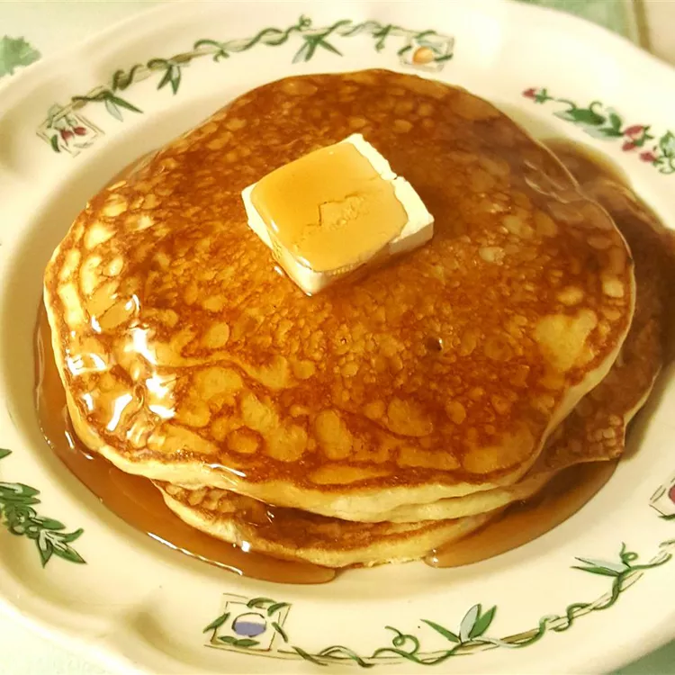

Buttermilk Pancakes

A pancake recipe passed down from generations to generation. They are light and fluufy, and great with berry syrups. The total time is 30 minutes including prepping time and cooking time. The recipe will produced up to 4 servings of pancakes.
Ingridients:
- 1 cup flour
- 1 teaspoon salt
- 1 teaspoon baking soda
- 1 large egg
- 1 1/8 cups buttermilk
- 2 tablespoons butter, melted
Steps:
- Preheat and lightly grease a large skillet or electric griddle.
- Mix flour, salt, and baking soda together in a bowl. Add egg, buttermilk, and butter; stir together lightly, but keep it lumpy. The batter should look thick, spongy, and puffy.
- Drop 1/3 cup of the batter onto the cooking surface, spreading lightly with the bottom of the cup. Cook until lightly browned on each side, 1 to 2 minutes per side.
- Serve and enjoy!